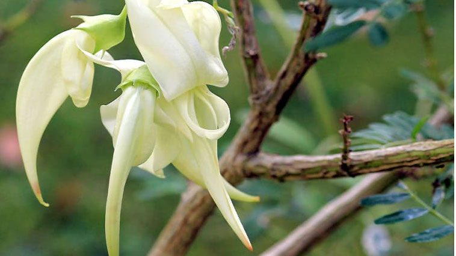

Articles
Threatened Plants of New Zealand
One in 13 of New Zealand’s native plants is now threatened with extinction. Six species are already extinct – like the moa and the huia, they are gone forever. Even the popular kakabeak (Clianthus puniceus) is in a serious plight, with just one plant left in the wild. Another 24 species are known in the wild from fewer than 200 plants.
Threatened Plants of New Zealand is designed to be an essential tool in the fight against extinction, as well as a stunning showcase of the spectacular flora of a country in which new plant species are still being routinely recog-nised, 240 years after the first specimens were brought to the attention of the world’s scientific community.